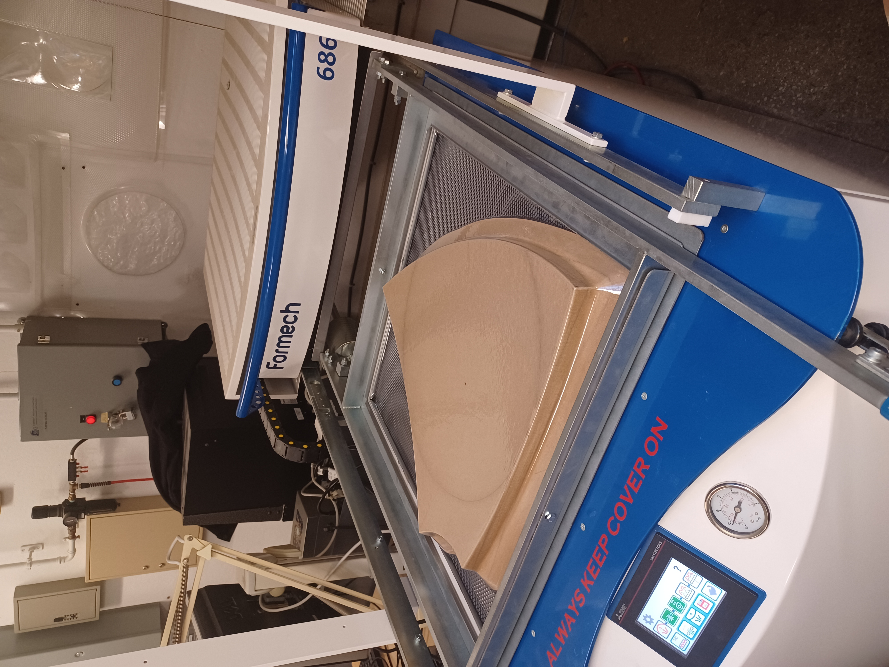
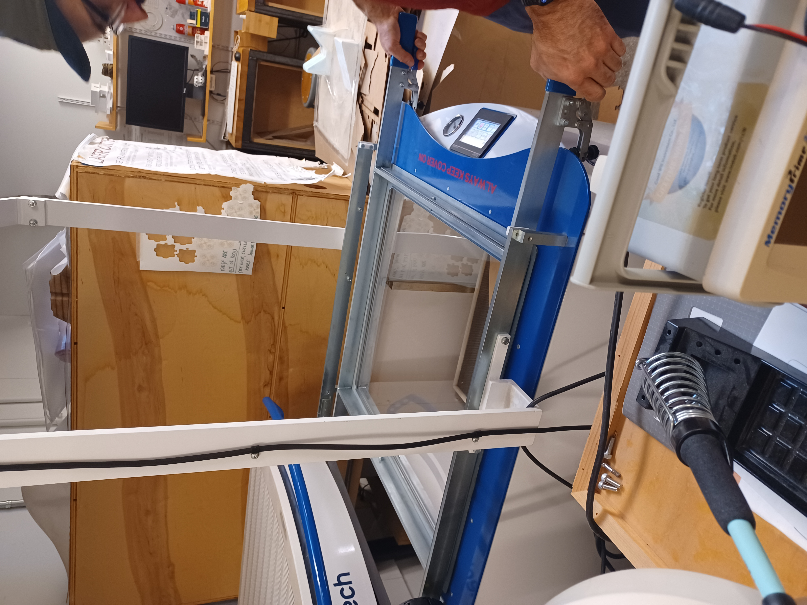
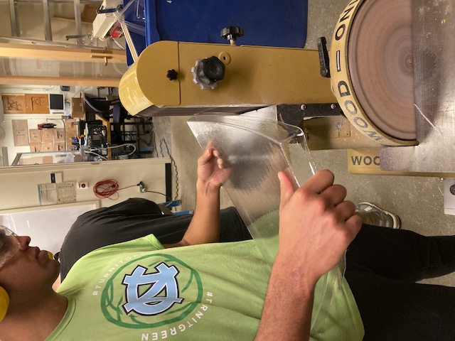
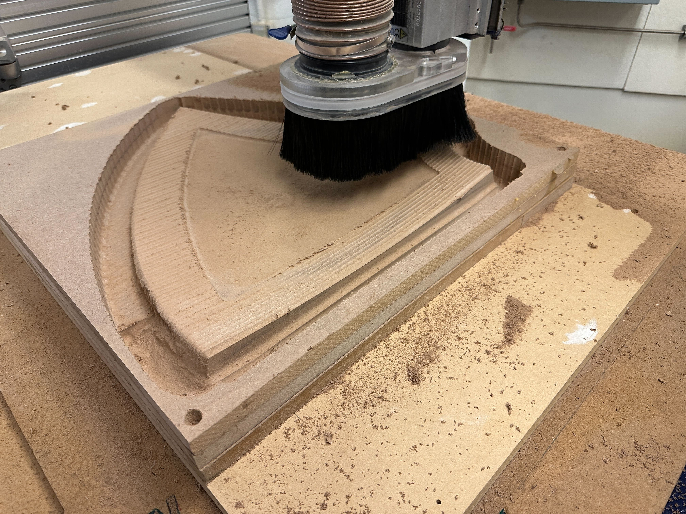
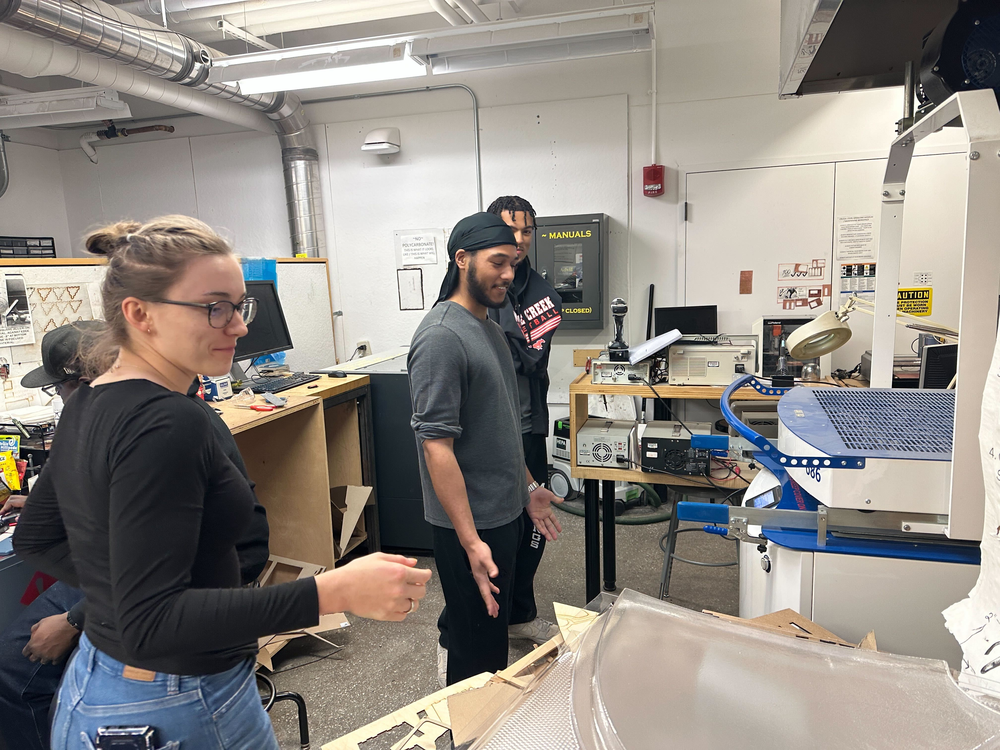
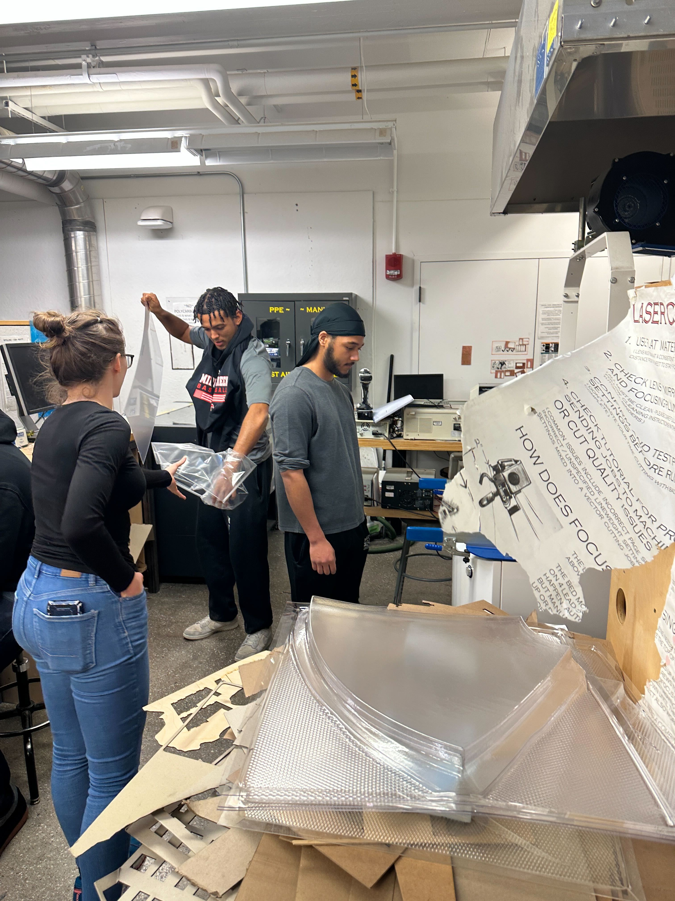

### Week 14
##### _Monday, December 5_
We commenced with thermo-forming the 6 pieces for the reflector. We centered our wooden mold on the screen of the machine. We then moved the screen to the bottom of the machine and placed a plastic sheet on the top. We pulled the heater over the plastic and waited ~90 seconds for the plastic to soften, after which we moved the heater away, inflated the plastic sheet, pushed the mold upward, and sucked the air from under the plastic. Once we observed the plastic was flat to the wood, we blew air over it to help it cool down faster. Once cooled, we pushed the mold up to pop it out of the plastic, and lo and behold--a plastic impression of the mold was left!
Our first attempt was a little wrinkled, so Justin drilled a hole into the middle of the mold to assist in the machine vacuuming the air from under the plastic to avoid the creasing.
<img src="./messed up.png" alt="messed up" width="450"/>
We repeated this process 6 times for 6 pieces, and took them to a workshop for cutting and shaping. Noah and I cut the excess plastic using the wooden mold as support, and Xavier began sanding the rough edges once we were done cutting. Noah and I finished cutting, so Noah also went to sand the edges. We were able to cut and shape 4 pieces, so we will complete the process later.
Here are pictures (and a video of Noah!) from us thermoforming and finishing the pieces:






<video width = "500" controls>
<source src="./noah forming.mp4" type="video/mp4">
</video>
##### _Wednesday, December 7_
When we came in, we were very close to beginning assembling. Noah and Xavier went to building 3 to sand down the last 2 reflector pieces, and I started putting the reflective tape on the remaining pieces and the bounce mirror. I had finished the bounce mirror and 3 of the reflector pieces when the guys got back, and then we each did one piece.
Once everything was taped, we began drilling the screw holes on the bottom and top of every reflector piece. We used the bracket pieces for guide holes. However, we had some misfits in the holes which made fitting the brackets very difficult, but thankfully we were able to redrill the holes in alignment quite easily. One of our brackets broke, but we were able to screw the other pieces everywhere else and will have a new bracket by next class.
[Head back to the home page](../index.html).